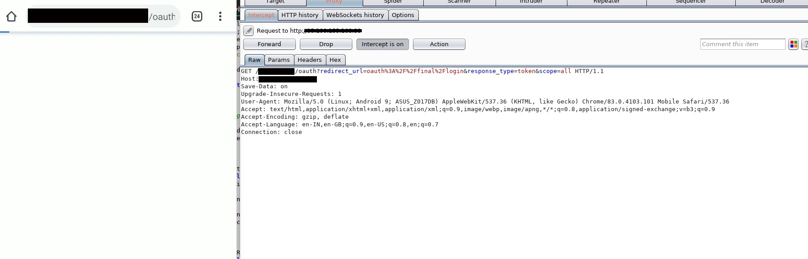
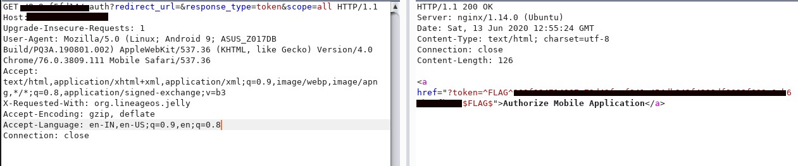
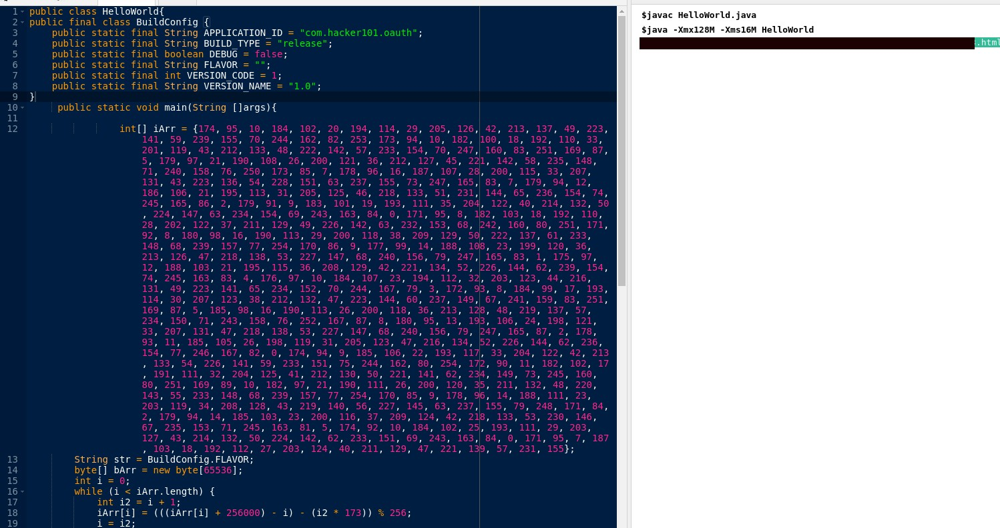
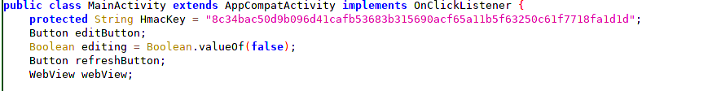
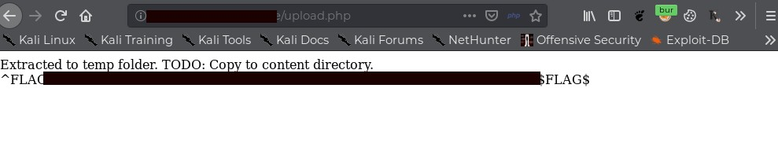
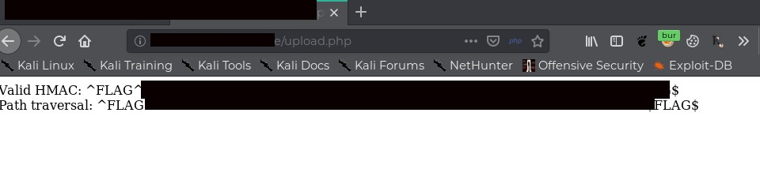

Hackerone H101 Android Challenges Walkthrough
June 13, 2020
I have recently completed the H101 CTF Android challenges. It was really fun learning and completing the challenges, so here's the writeup.
1) H1 Thermostat
The first challenge is in the easy category which was basically about intercepting traffic and reading source code in the APK.
In this case, we decompile the APK and inspect it. After analyzing the files, you can see a Java class named com.hacker101.level11.PayloadRequest.
Once we open it, we can see flag 0 and flag 1. But for flag 0, there was one more way around - if you had intercepted the traffic for the application, then you would have found the header as flag too:
X-Flag: ^FLAG^flag$FLAG$Also in the source code, we can see that flag 1 is MD5 hashed and then sent to the server, so the only way was through reading the source code.
2) Intentional Exercise
The exercise was in the moderate category where the goal of the challenge was to get a single flag by generating a correct hash for the request.
Once we open the app, we can see a request going to the server like:
http://URL/appRoot?&hash=61f4518d844a9bd27bb971e55a23cd6cf3a9f5ef7f46285461cf6cf135918a1aThis displays a link /appRoot/flagBearer. The important clues we get are from inspection of the Java class - we can see that the URL is first taken, checked for ?, then using the secret key a hash is generated of type SHA-256. But in the first request we can see that hash=61.... is SHA-256 of the key itself, so that won't work.
So we also got our second request which was having a path /flagBearer.
Combining the two things, I tried doing SHA-256 by (key/flagBearer) which gave a hash:
8743a18df6861ced0b7d472b34278dc29abba81b3fa4cf836013426d6256bd5eSo I made a final request which looked like:
http://URL/appRoot/flagBearer?&hash=8743a18df6861ced0b7d472b34278dc29abba81b3fa4cf836013426d6256bd5eSending it to the server gave me the flag: ^FLAG^flag$FLAG$
3) Oauthbreaker
This was a moderate challenge containing two flags. When we open the app, we can see the request containing:
/oauth?redirect_url=oauth%3A%2F%2Ffinal%2Flogin&response_type=token&scope=allInspecting the MainActivity class, we can see that redirect_uri is by default given the value of oauth://final/ which redirects it to the app with an authed request. So if we remove the redirect_uri parameter (i.e., sending blank values in it):
http://url/oauth?redirect_url=&response_type=token&scope=allWe get our first flag in response.
For the second flag, we need to look at our WebAppInterface. Here we have a Java class which is not used anywhere, so I took the file and compiled it by adding few variables and executed it.
This gave me 48ce----.html
Now when we add this URL to our previous redirect_uri, we get our second flag: ^FLAG^flag$FLAG$
4) Mobile Webdev
This was the most awesome challenge which helped me to clear some of my doubts and learn good techniques on HMAC and zip files. The challenge was more a web category and some cryptography.
As we open the application, we can see it as a notesaver application where we can see the notes and edit them. As we analyze requests, we can see that these directories are used:
http://URL/content/- would serve the content of noteshttp://URL/edit.php?file=index.html- would be used to edit the filehttp://URL/save.php- would take argument asfile=&datato save the contentshttp://URL/upload.php- it was hidden in comments of edit.php, the feature was used to upload files
Among the four, all the functions were working normally except the upload function. Every time I tried uploading something, it gave me an error of HMAC missing.
Upon analyzing the APK, we can see that we have an HMAC key but no implementation visible of how to send it in the request.
To send any POST upload, the request would normally look like:
-----------------------------2220428816716698861687125981
Content-Disposition: form-data; name="file"; filename="file.file"
Content-Type: application/html
-----------------------------2220428816716698861687125981
Content-Disposition: form-data; name="something"
value
-----------------------------2220428816716698861687125981--So we basically have to upload a file which was signed by our HMAC key. Also, we need to find the type of key that was used - in this case it was MD5. So concluding, we had to send our file and signature values signed with our keys. This can be done online as well as with our own script.
The final request of upload looked like:
-----------------------------2220428816716698861687125981
Content-Disposition: form-data; name="file"; filename="file.file"
Content-Type: application/html
-----------------------------2220428816716698861687125981
Content-Disposition: form-data; name="hmac"
signaturevalue
-----------------------------2220428816716698861687125981--Once we uploaded the flag, we got our first flag and the message.
This was our hint for the second level that files are uploaded in temp directory and we have to move to content folder. Basically it indicated a popular flaw of zip traversal:
If zip files are not properly handled in extraction and compression, they may lead to directory traversal. So in this case, we can fetch our files and even get sensitive information.
So I created a zip nested with zips (else you can use an online tool) such case of a zip-slip file which upon viewing should look like: ../../../../../../temp/test.zip
Next, I signed this zip again and uploaded it which finally gave me the flag.
Conclusion
Thanks for reading! If you have any doubts, feel free to connect with me.